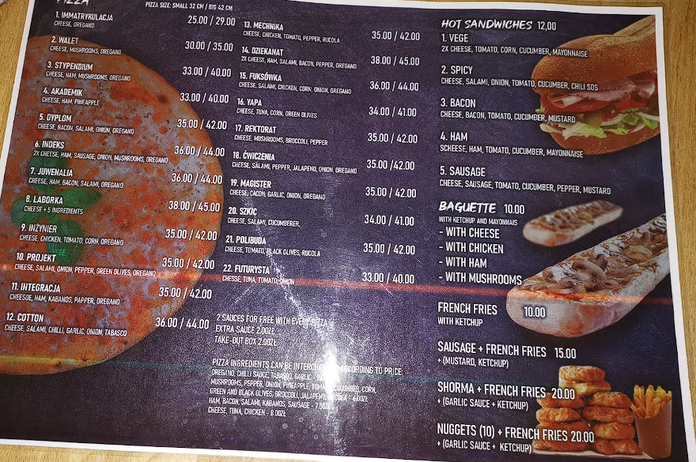
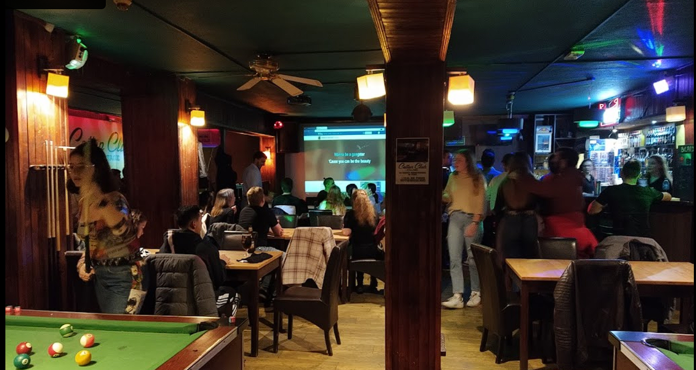
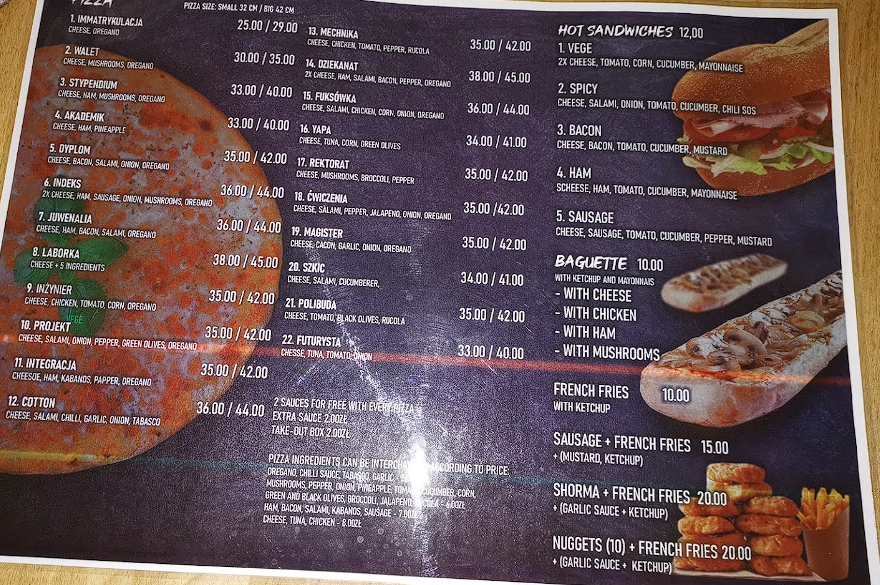

Pub
The Cotton Club offers its customers several ways to have fun, such as:
-Pool and Football tables to entertain you, of course you don't need to be a professional player to have access to the different tables. Notwithstanding this aspect you will have to pay the sum of 30 PLN for approximately 1 hour of play.
-And the most interesting is Karaoke: let yourself be carried away by your talent, your passion for music or simply on a whim, snatch the microphone from the person who preceded you and interpret music alone or in a group that you like. Don't be surprised to find people who are super committed to supporting you even though you don't know them. If, like me, you don't really like to present your talent as a singer, you can still support the different performers with your applause or meticulous interventions on the choruses.

Of course, as its status indicates, the Cotton Club offers several varieties of drinks, ranging from fairly soft drinks to hard drinks, which you can enjoy with a sandwich or a pizza ordered according to your preference. The Service being quite rigorous, barely 20 minutes of waiting, you will be able to see your aperitif all hot and ready to be consumed. I hope this article made you want to visit the Cotton. See you soon for a new article.
CottonClub
Hey, it is me again,with another idea of exit destination. we are going to visit a pub named Cotton Club, which is a good mix between partying and chilling.
Located at aleje Politechniki 9A, 93-590 Łódź, Poland, Cotton club with its a fairly warm atmosphere, is a place that will allow you alone or accompanied (but I would advise you to go there obviously with friends) to enjoy a good evening. It generally opens from Tuesday to Sunday from 6 p.m. to 2 a.m. with a large crowd on weekends.
My first experience at Cotton was mainly motivated by the Members of the ESN (association in charge of animating the life of international students), who by an evening under the theme Karaoké Night invited us to go there. At first, the concept did not interest me much, but after a first trip to the Bar with some friends I would never have believed that this would be the start of a long series.

Pub atmosphere
The Cotton Club offers its customers several ways to have fun, such as:
-Pool and Football tables to entertain you, of course you don't need to be a professional player to have access to the different tables. Notwithstanding this aspect you will have to pay the sum of 30 PLN for approximately 1 hour of play.
-And the most interesting is Karaoke: let yourself be carried away by your talent, your passion for music or simply on a whim, snatch the microphone from the person who preceded you and interpret music alone or in a group that you like. Don't be surprised to find people who are super committed to supporting you even though you don't know them. If, like me, you don't really like to present your talent as a singer, you can still support the different performers with your applause or meticulous interventions on the choruses.

meals of the Menu.
Of course, as its status indicates, the Cotton Club offers several varieties of drinks, ranging from fairly soft drinks to hard drinks, which you can enjoy with a sandwich or a pizza ordered according to your preference. The Service being quite rigorous, barely 20 minutes of waiting, you will be able to see your aperitif all hot and ready to be consumed. I hope this article made you want to visit the Cotton. See you soon for a new article.
Sources